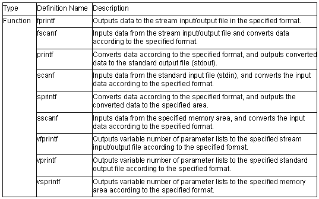

<no_float.h>
Provides simplified I/O functions that does not support the conversion of floating-point numbers (%f, %e, %E, %g, and %G). The ROM size can be minimized when inputting/outputting files that does not require floating-point number conversion.

Declare #include <no_float.h> before specifying #include <stdio.h>.
The following shows an example.
#include <no_float.h>
#include <stdio.h>
void main(void)
{
printf("Hello\n");
}
Note
If floating-point numbers are specified for functions fprintf, fscanf, printf, scanf, sprintf, sscanf, vfprintf, vprintf, or vsprintf, correct operation at function execution is not guaranteed.